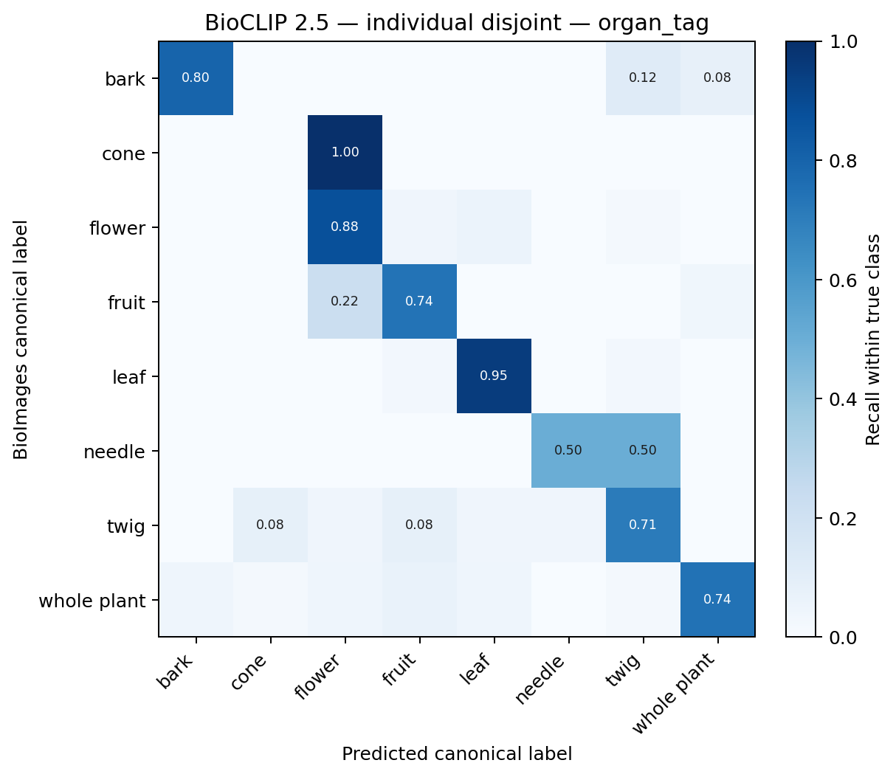
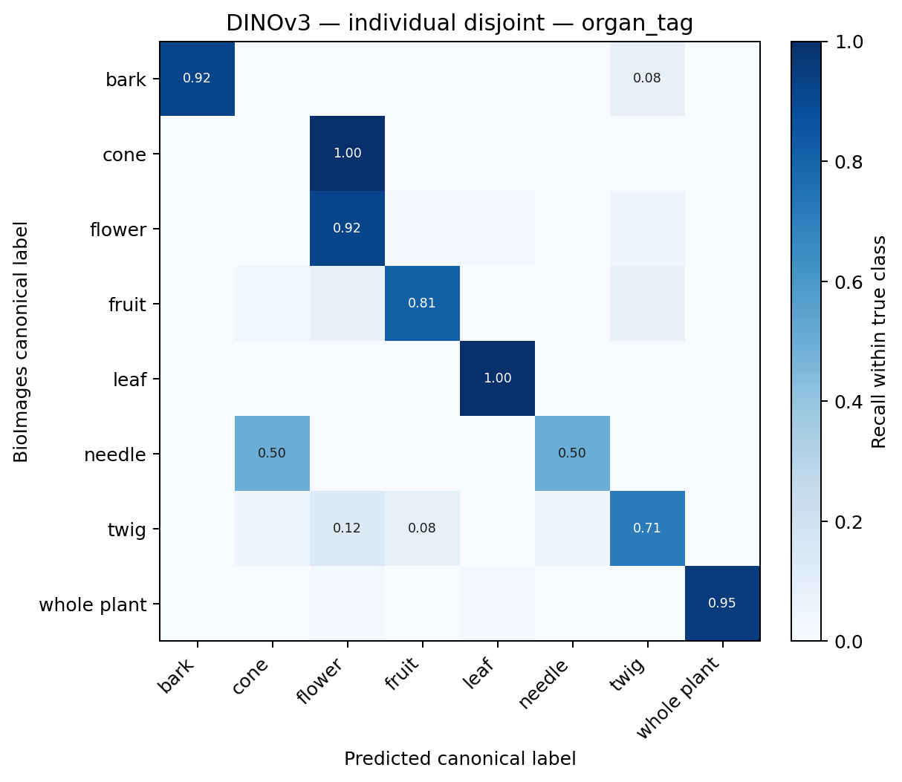
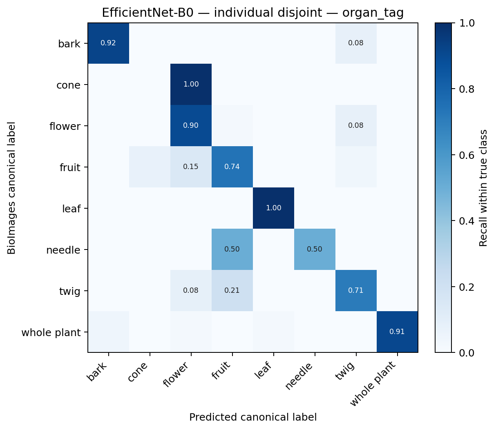
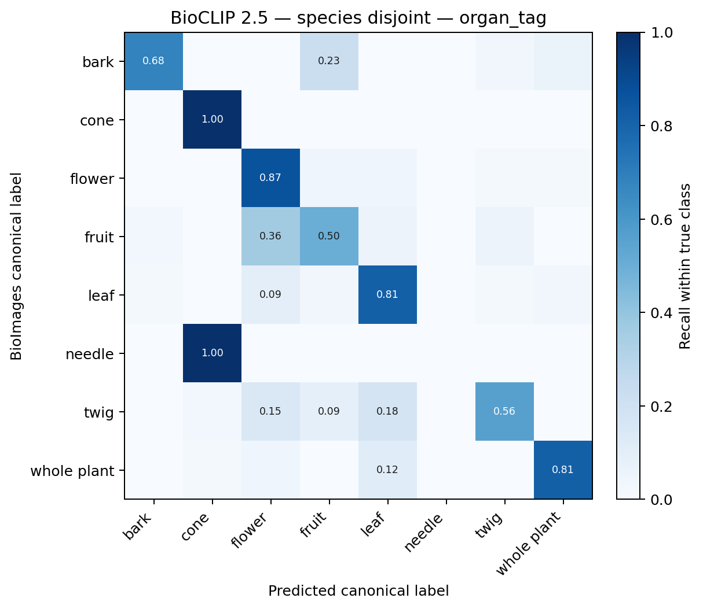
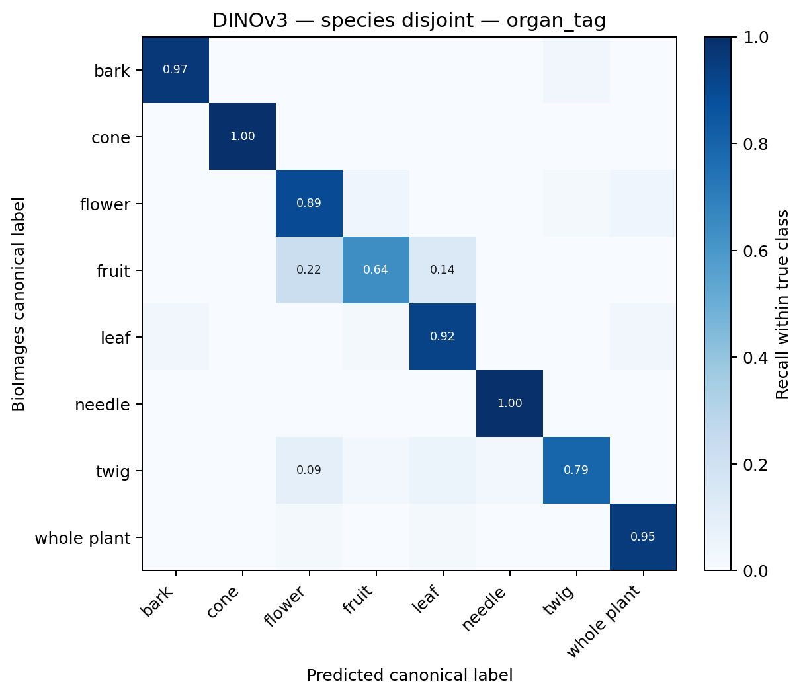
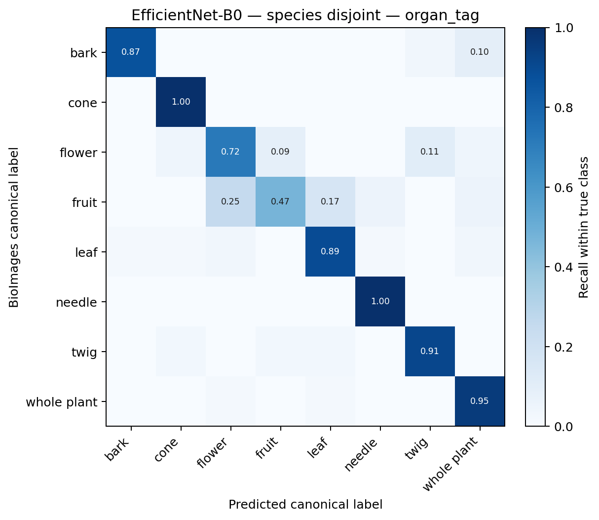

Can a frozen visual representation recognize plant organs across species?
The data support the morphology hypothesis. Supported in this benchmark: DINOv3 is stronger than BioCLIP 2.5 on both species-disjoint canonical organ classification and cross-species organ retrieval, consistent with a more species-invariant morphology representation.
Generated from 1,641 aligned embeddings drawn from a 1,899-image, 85-species BioImages corpus. Labels are BioImages canonical labels—not claims of a unique visual truth.
1. What we tested
BioCLIP 2.5, DINOv3, and ImageNet EfficientNet-B0 were compared as frozen embeddings with the same class-balanced logistic-regression probe, the same C grid, the same seed, and the same splits. No random image split was used.
| Protocol | Train | Validation | Test | Held-out unit |
|---|---|---|---|---|
| Individual-disjoint | 1181 | 249 | 211 | individual_id |
| Species-disjoint | 1144 | 238 | 259 | species |
individual_id, not images.2. Headline results
Table 1 · Individual-disjoint organ_tag benchmark
| Model | Top-1 | Top-1 95% CI | Top-3 | Macro F1 | Macro F1 95% CI | Weighted F1 | Test n |
|---|---|---|---|---|---|---|---|
| BioCLIP 2.5 | 81.0% | 73.7–87.6% | 96.7% | 66.9% | 56.7–84.0% | 81.4% | 211 |
| DINOv3 | 89.6% | 84.4–94.1% | 98.6% | 73.4% | 64.4–91.4% | 90.0% | 211 |
| EfficientNet-B0 | 87.2% | 81.4–92.3% | 99.1% | 73.1% | 62.0–89.2% | 87.4% | 211 |
Table 2 · Species-disjoint organ_tag benchmark
| Model | Top-1 | Top-3 | Macro F1 | Weighted F1 | Test n |
|---|---|---|---|---|---|
| BioCLIP 2.5 | 71.8% | 93.8% | 52.7% | 71.7% | 259 |
| DINOv3 | 87.3% | 98.5% | 88.2% | 87.0% | 259 |
| EfficientNet-B0 | 81.5% | 93.8% | 75.4% | 81.1% | 259 |
Table 3 · Cross-species retrieval
| Model | P@1 | P@5 | P@10 |
|---|---|---|---|
| BioCLIP 2.5 | 58.6% | 53.3% | 49.4% |
| DINOv3 | 84.3% | 81.2% | 79.6% |
| EfficientNet-B0 | 78.1% | 77.2% | 75.7% |
3. Individual-disjoint
The same plant individual never appears in more than one split. This is the normal canonical organ-classification benchmark.
| Model | Top-1 | Top-1 95% CI | Top-3 | Macro F1 | Macro F1 95% CI | Weighted F1 | Test n |
|---|---|---|---|---|---|---|---|
| BioCLIP 2.5 | 81.0% | 73.7–87.6% | 96.7% | 66.9% | 56.7–84.0% | 81.4% | 211 |
| DINOv3 | 89.6% | 84.4–94.1% | 98.6% | 73.4% | 64.4–91.4% | 90.0% | 211 |
| EfficientNet-B0 | 87.2% | 81.4–92.3% | 99.1% | 73.1% | 62.0–89.2% | 87.4% | 211 |
Clustered 95% confidence intervals are stored in each model JSON file under metrics/.
4. Species-disjoint
Train, validation, and test species are mutually exclusive. Success therefore requires organ recognition on botanical species not observed during probe fitting.
| Model | Top-1 | Top-3 | Macro F1 | Weighted F1 | Test n |
|---|---|---|---|---|---|
| BioCLIP 2.5 | 71.8% | 93.8% | 52.7% | 71.7% | 259 |
| DINOv3 | 87.3% | 98.5% | 88.2% | 87.0% | 259 |
| EfficientNet-B0 | 81.5% | 93.8% | 75.4% | 81.1% | 259 |
5. Cross-species retrieval
For every embedded image, neighbors from the same individual and the same species were removed before computing canonical organ precision.
| Model | P@1 | P@5 | P@10 |
|---|---|---|---|
| BioCLIP 2.5 | 58.6% | 53.3% | 49.4% |
| DINOv3 | 84.3% | 81.2% | 79.6% |
| EfficientNet-B0 | 78.1% | 77.2% | 75.7% |
Open the same-query nearest-neighbor comparison gallery →
metrics/unrestricted_retrieval_diagnostic.csv; it measures how often each representation retrieves the same species when allowed.6. Per-organ performance
Table 4 reports canonical-label precision, recall, and F1. Support is the held-out image count for that protocol and is identical across models.
| protocol | canonical_label | model | precision | recall | f1 | support |
|---|---|---|---|---|---|---|
| individual_disjoint | bark | BioCLIP 2.5 | 90.9% | 80.0% | 85.1% | 25 |
| individual_disjoint | bark | DINOv3 | 100.0% | 92.0% | 95.8% | 25 |
| individual_disjoint | bark | EfficientNet-B0 | 92.0% | 92.0% | 92.0% | 25 |
| individual_disjoint | cone | BioCLIP 2.5 | 0.0% | 0.0% | 0.0% | 1 |
| individual_disjoint | cone | DINOv3 | 0.0% | 0.0% | 0.0% | 1 |
| individual_disjoint | cone | EfficientNet-B0 | 0.0% | 0.0% | 0.0% | 1 |
| individual_disjoint | flower | BioCLIP 2.5 | 81.1% | 87.8% | 84.3% | 49 |
| individual_disjoint | flower | DINOv3 | 86.5% | 91.8% | 89.1% | 49 |
| individual_disjoint | flower | EfficientNet-B0 | 84.6% | 89.8% | 87.1% | 49 |
| individual_disjoint | fruit | BioCLIP 2.5 | 71.4% | 74.1% | 72.7% | 27 |
| individual_disjoint | fruit | DINOv3 | 88.0% | 81.5% | 84.6% | 27 |
| individual_disjoint | fruit | EfficientNet-B0 | 74.1% | 74.1% | 74.1% | 27 |
| individual_disjoint | leaf | BioCLIP 2.5 | 86.4% | 95.0% | 90.5% | 40 |
| individual_disjoint | leaf | DINOv3 | 95.2% | 100.0% | 97.6% | 40 |
| individual_disjoint | leaf | EfficientNet-B0 | 97.6% | 100.0% | 98.8% | 40 |
| individual_disjoint | needle | BioCLIP 2.5 | 50.0% | 50.0% | 50.0% | 2 |
| individual_disjoint | needle | DINOv3 | 50.0% | 50.0% | 50.0% | 2 |
| individual_disjoint | needle | EfficientNet-B0 | 100.0% | 50.0% | 66.7% | 2 |
| individual_disjoint | twig | BioCLIP 2.5 | 70.8% | 70.8% | 70.8% | 24 |
| individual_disjoint | twig | DINOv3 | 73.9% | 70.8% | 72.3% | 24 |
| individual_disjoint | twig | EfficientNet-B0 | 70.8% | 70.8% | 70.8% | 24 |
| individual_disjoint | whole plant | BioCLIP 2.5 | 91.4% | 74.4% | 82.1% | 43 |
| individual_disjoint | whole plant | DINOv3 | 100.0% | 95.3% | 97.6% | 43 |
| individual_disjoint | whole plant | EfficientNet-B0 | 100.0% | 90.7% | 95.1% | 43 |
| species_disjoint | bark | BioCLIP 2.5 | 91.3% | 67.7% | 77.8% | 31 |
| species_disjoint | bark | DINOv3 | 93.8% | 96.8% | 95.2% | 31 |
| species_disjoint | bark | EfficientNet-B0 | 96.4% | 87.1% | 91.5% | 31 |
| species_disjoint | cone | BioCLIP 2.5 | 28.6% | 100.0% | 44.4% | 2 |
| species_disjoint | cone | DINOv3 | 100.0% | 100.0% | 100.0% | 2 |
| species_disjoint | cone | EfficientNet-B0 | 33.3% | 100.0% | 50.0% | 2 |
| species_disjoint | flower | BioCLIP 2.5 | 60.0% | 84.8% | 70.3% | 46 |
| species_disjoint | flower | DINOv3 | 77.4% | 89.1% | 82.8% | 46 |
| species_disjoint | flower | EfficientNet-B0 | 73.3% | 71.7% | 72.5% | 46 |
| species_disjoint | fruit | BioCLIP 2.5 | 56.2% | 50.0% | 52.9% | 36 |
| species_disjoint | fruit | DINOv3 | 85.2% | 63.9% | 73.0% | 36 |
| species_disjoint | fruit | EfficientNet-B0 | 77.3% | 47.2% | 58.6% | 36 |
| species_disjoint | leaf | BioCLIP 2.5 | 77.6% | 81.2% | 79.4% | 64 |
| species_disjoint | leaf | DINOv3 | 88.1% | 92.2% | 90.1% | 64 |
| species_disjoint | leaf | EfficientNet-B0 | 87.7% | 89.1% | 88.4% | 64 |
| species_disjoint | needle | BioCLIP 2.5 | 0.0% | 0.0% | 0.0% | 3 |
| species_disjoint | needle | DINOv3 | 75.0% | 100.0% | 85.7% | 3 |
| species_disjoint | needle | EfficientNet-B0 | 50.0% | 100.0% | 66.7% | 3 |
| species_disjoint | twig | BioCLIP 2.5 | 79.2% | 55.9% | 65.5% | 34 |
| species_disjoint | twig | DINOv3 | 93.1% | 79.4% | 85.7% | 34 |
| species_disjoint | twig | EfficientNet-B0 | 83.8% | 91.2% | 87.3% | 34 |
| species_disjoint | whole plant | BioCLIP 2.5 | 87.5% | 81.4% | 84.3% | 43 |
| species_disjoint | whole plant | DINOv3 | 91.1% | 95.3% | 93.2% | 43 |
| species_disjoint | whole plant | EfficientNet-B0 | 82.0% | 95.3% | 88.2% | 43 |
7. Confusion matrices
Rows are normalized within the true BioImages canonical label.












8. Nearest-neighbor examples
The gallery uses a deterministic, organ-diverse subset of the individual-disjoint test queries and shows the top five cross-species neighbors from each representation.
9. Error analysis
| Bucket | Images | Fraction |
|---|---|---|
| both correct | 163 | 77.3% |
| DINO correct / BioCLIP wrong | 26 | 12.3% |
| both wrong | 14 | 6.6% |
| BioCLIP correct / DINO wrong | 8 | 3.8% |
10. Multi-label ambiguity
A photograph may reasonably show several organs while BioImages assigns one canonical label. The benchmark therefore reports BioImages canonical-label accuracy, not unique visual truth.
Open the blank 180-image human audit gallery → · Download blank audit CSV
11. Exact-view feasibility
The corpus contains 45 distinct organ_category / subview combinations. Many have too little support for a defensible headline multiclass benchmark, so this release reports feasibility rather than forcing a sparse fine-view score.
| Exact view | All n | Species | Embedded n | Individual test n | Species test n | Feasibility |
|---|---|---|---|---|---|---|
| whole tree (or vine) / general | 245 | 70 | 219 | 29 | 30 | reasonable |
| leaf / whole upper surface | 194 | 72 | 171 | 18 | 30 | reasonable |
| leaf / showing orientation on twig | 137 | 66 | 115 | 12 | 21 | reasonable |
| twig / orientation of petioles | 128 | 59 | 109 | 10 | 23 | reasonable |
| inflorescence / whole - unspecified | 114 | 55 | 100 | 12 | 10 | reasonable |
| bark / of a large tree | 106 | 49 | 93 | 11 | 15 | reasonable |
| leaf / margin of upper + lower surface | 101 | 57 | 86 | 9 | 12 | reasonable |
| fruit / lateral or general close-up | 89 | 50 | 76 | 9 | 13 | reasonable |
| fruit / as borne on the plant | 82 | 46 | 73 | 11 | 12 | reasonable |
| whole tree (or vine) / view up trunk | 55 | 31 | 51 | 6 | 9 | reasonable |
| fruit / immature | 54 | 32 | 44 | 6 | 10 | reasonable |
| inflorescence / lateral view of flower | 53 | 30 | 44 | 10 | 7 | reasonable |
| inflorescence / whole - male | 52 | 24 | 49 | 10 | 11 | reasonable |
| inflorescence / frontal view of flower | 49 | 28 | 44 | 11 | 6 | limited |
| leaf / unspecified | 48 | 26 | 38 | 3 | 3 | limited |
| bark / of a medium tree or large branch | 47 | 32 | 39 | 8 | 11 | limited |
| bark / of a small tree or small branch | 42 | 34 | 37 | 6 | 5 | limited |
| twig / winter overall | 32 | 26 | 27 | 2 | 5 | limited |
| whole tree (or vine) / winter | 32 | 24 | 29 | 5 | 3 | limited |
| inflorescence / whole - female | 29 | 19 | 27 | 5 | 10 | limited |
| twig / close-up winter leaf scar/bud | 26 | 20 | 24 | 2 | 3 | limited |
| twig / close-up winter terminal bud | 23 | 12 | 21 | 6 | 2 | limited |
| whole tree / general | 22 | 12 | 16 | 3 | 1 | limited |
| fruit / section or open | 18 | 12 | 14 | 1 | 1 | exploratory only |
| twig / unspecified | 18 | 13 | 13 | 1 | 0 | exploratory only |
| cone / female - closed | 13 | 5 | 13 | 0 | 2 | exploratory only |
| leaf / entire needle | 11 | 7 | 5 | 0 | 1 | exploratory only |
| seed / general view | 11 | 4 | 11 | 0 | 0 | exploratory only |
| twig / showing attachment of needles | 11 | 9 | 7 | 3 | 1 | exploratory only |
| cone / female - mature open | 10 | 6 | 5 | 0 | 0 | exploratory only |
| cone / female - receptive | 8 | 3 | 8 | 0 | 0 | exploratory only |
| cone / male | 7 | 4 | 7 | 1 | 0 | exploratory only |
| inflorescence / ventral view of flower + perianth | 7 | 3 | 6 | 0 | 0 | exploratory only |
| inflorescence / close-up of flower interior | 5 | 5 | 4 | 1 | 0 | exploratory only |
| whole tree / view up trunk | 4 | 3 | 2 | 0 | 0 | insufficient |
| inflorescence / unspecified | 3 | 3 | 3 | 0 | 2 | insufficient |
| bark / unspecified | 2 | 2 | 2 | 0 | 0 | insufficient |
| fruit / unspecified | 2 | 2 | 2 | 0 | 0 | insufficient |
| twig / after fallen needles | 2 | 2 | 0 | 0 | 0 | insufficient |
| unspecified / unspecified | 2 | 2 | 2 | 0 | 0 | insufficient |
| leaf / basal or on lower stem | 1 | 1 | 1 | 0 | 0 | insufficient |
| seed / unspecified | 1 | 1 | 1 | 0 | 0 | insufficient |
| stem / showing leaf bases | 1 | 1 | 1 | 0 | 0 | insufficient |
| whole plant / in flower - general view | 1 | 1 | 1 | 0 | 0 | insufficient |
| whole tree (or vine) / unspecified | 1 | 1 | 1 | 0 | 0 | insufficient |
12. Original organ_category task
This task preserves BioImages' original categories, including the separate whole-tree variants and inflorescence.
Individual-disjoint
| Model | Top-1 | Top-1 95% CI | Top-3 | Macro F1 | Macro F1 95% CI | Weighted F1 | Test n |
|---|---|---|---|---|---|---|---|
| BioCLIP 2.5 | 81.5% | 73.3–88.2% | 96.7% | 71.3% | 64.7–87.0% | 81.7% | 211 |
| DINOv3 | 87.7% | 82.0–92.6% | 98.6% | 76.2% | 66.6–91.9% | 88.1% | 211 |
| EfficientNet-B0 | 81.0% | 74.7–86.8% | 97.6% | 66.4% | 59.3–72.4% | 82.2% | 211 |
Species-disjoint
| Model | Top-1 | Top-3 | Macro F1 | Weighted F1 | Test n |
|---|---|---|---|---|---|
| BioCLIP 2.5 | 74.1% | 95.8% | 72.0% | 74.3% | 259 |
| DINOv3 | 87.3% | 98.5% | 84.4% | 87.5% | 259 |
| EfficientNet-B0 | 81.9% | 95.8% | 67.1% | 81.1% | 259 |
13. Methods / reproducibility
Run uv run scripts/run_organ_benchmark.py from this directory. The script validates embedding identity/order/normalization, asserts zero leakage, deterministically selects the species split, fits all probes, bootstraps by individual, computes retrieval, and rebuilds every table, figure, gallery, CSV, JSON, and report.
Input embeddings: existing strict outputs for BioCLIP 2.5 (1,024-D), DINOv3 (768-D), and EfficientNet-B0 (1,280-D). Dataset images are not copied into this directory or committed; galleries load BioImages source thumbnails.